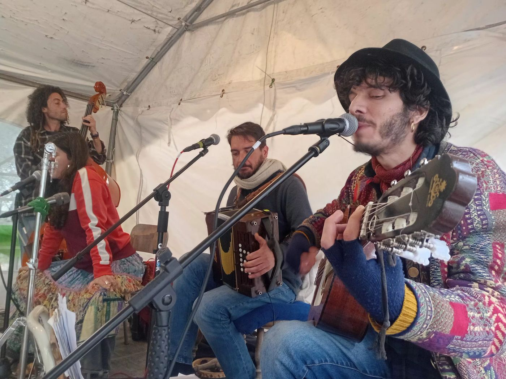

Porto Madera è un collettivo musicale che nasce dal movimento, dall'incontro e dal ritmo condiviso.
Porto Madera is a musical collective born from movement, encounter, and shared rhythm.
Il nome richiama un luogo immaginario: un porto in cui approdano suoni, esperienze e traiettorie diverse, che si intrecciano per dare vita a un linguaggio vivo, fisico e profondamente umano.
The name evokes an imaginary place: a harbour where sounds, experiences, and different trajectories arrive, interweaving to give life to a living, physical, and deeply human language.
Per Porto Madera, la musica è materia concreta: aria che vibra, pelli che risuonano, mantici che respirano. È viaggio, chilometri percorsi, piazze attraversate, relazioni costruite nel tempo. È soprattutto un invito costante a muovere il corpo, in qualsiasi contesto, ma anche uno spazio d'ascolto capace di evocare paesaggi, immagini e suggestioni.
For Porto Madera, music is concrete matter: air that vibrates, skins that resonate, bellows that breathe. It is journey, kilometres covered, squares traversed, relationships built over time. Above all, it is a constant invitation to move the body, in any context — but also a listening space capable of evoking landscapes, images, and suggestions.
Il collettivo nasce per abitare lo spazio in modo essenziale e diretto. Suona a contatto con il pubblico, per terra, sulla pietra, sotto archi e volte, tra la gente, tra alberi o all'interno di architetture che amplificano naturalmente il suono. Il progetto si muove nello spirito del balfolk europeo, ma lo attraversa con un'attitudine libera, contaminata dall'esperienza della strada, da una sensibilità teatrale e da una visione più ampia riconducibile alla world music contemporanea.
The collective is born to inhabit space in an essential and direct way. It plays in contact with the audience — on the ground, on stone, under arches and vaults, among people, among trees, or within architectures that naturally amplify sound. The project moves in the spirit of European balfolk, but traverses it with a free attitude, informed by the experience of the street, a theatrical sensibility, and a broader vision rooted in contemporary world music.
Il risultato è uno spettacolo che può essere vissuto sia come esperienza di ascolto sia come momento di danza, capace di adattarsi a contesti molto diversi: festival, piazze, eventi culturali, spazi urbani e naturali. La dimensione resta sempre quella della prossimità, dell'ascolto reciproco, della costruzione di un momento condiviso.
The result is a show that can be experienced both as a listening experience and as a moment of dance, capable of adapting to very different contexts: festivals, squares, cultural events, urban and natural spaces. The dimension is always one of proximity, mutual listening, and the construction of a shared moment.

Il repertorio
Il repertorio affonda le sue radici nel balfolk, ma si sviluppa in un territorio più ampio, che attraversa il Sud Italia, i Pirenei e si estende verso l'Europa dell'Est, richiamando sonorità balcaniche e dell'area danubiana. Accanto ai brani della tradizione trovano spazio composizioni originali e momenti di improvvisazione, pensati per mantenere viva la pulsazione ma anche per aprire spazi più evocativi e narrativi.
Mazurke, bourrée e scottish convivono così con ritmi dispari, melodie modali e strutture aperte, in un dialogo continuo tra danza e ascolto. La musica può sostenere il movimento con energia e precisione, oppure rallentare, sospendere e trasformarsi in racconto sonoro, mantenendo sempre una forte identità acustica.
La musica di Porto Madera è costruita su un equilibrio dinamico tra struttura e libertà: da un lato la solidità delle forme tradizionali, dall'altro la possibilità di deformarle, espanderle e reinventarle nel momento presente. Ogni esecuzione è un processo vivo, che si nutre dell'energia del pubblico e del contesto.
The Repertoire
The repertoire has its roots in balfolk but develops across a broader territory, crossing Southern Italy, the Pyrenees, and extending towards Eastern Europe, drawing on Balkan and Danubian sounds. Alongside pieces from the tradition, there is room for original compositions and moments of improvisation — designed to keep the pulse alive while also opening more evocative and narrative spaces.
Mazurkas, bourrées, and scottishs coexist with odd-time rhythms, modal melodies, and open structures, in a continuous dialogue between dance and listening. The music can support movement with energy and precision, or slow down, suspend, and transform into sonic storytelling — always maintaining a strong acoustic identity.
Porto Madera's music is built on a dynamic balance between structure and freedom: on one side, the solidity of traditional forms; on the other, the possibility of reshaping, expanding, and reinventing them in the present moment. Each performance is a living process, nourished by the energy of the audience and the context.
Lo spettacolo
Lo spettacolo di Porto Madera è progettato per essere flessibile, coinvolgente e adattabile. Può assumere la forma di un concerto da ascolto, di un set da ballo o di una performance itinerante, mantenendo sempre una forte identità acustica.
Il pubblico non è mai soltanto spettatore: entra a far parte del cerchio, diventa presenza attiva e componente essenziale dell'esperienza. Allo stesso tempo, chi ascolta senza danzare trova uno spazio immersivo, fatto di dinamiche, tensioni e aperture sonore.
Dalla scottish alla bourrée, dalla mazurka ai ritmi dell'Europa orientale, fino a strutture più libere e narrative, il repertorio accompagna il corpo e l'immaginazione in un percorso fatto di variazioni, respiri e accelerazioni. La danza diventa così un linguaggio immediato, accessibile anche a chi non ha esperienza, mentre l'ascolto si apre a livelli più profondi e stratificati.
Porto Madera è anche uno spazio performativo aperto. Il progetto può accogliere e integrare interventi coreutici, elementi teatrali, improvvisazioni e collaborazioni con altri artisti, trasformando ogni evento in un'esperienza unica e non replicabile.
In questa dimensione, la musica non è solo esecuzione, ma relazione: un modo per creare connessioni, attivare energie e costruire momenti di presenza autentica, in cui il confine tra palco e pubblico si dissolve.
The Show
Porto Madera's show is designed to be flexible, engaging, and adaptable. It can take the form of a listening concert, a dance set, or a roaming performance, always maintaining a strong acoustic identity.
The audience is never merely spectators: they become part of the circle, an active presence and essential component of the experience. At the same time, those who listen without dancing find an immersive space of dynamics, tensions, and sonic openings.
From the scottish to the bourrée, from the mazurka to the rhythms of Eastern Europe, through to freer and more narrative structures, the repertoire guides both body and imagination on a journey of variations, breaths, and accelerations. Dance becomes an immediate language, accessible even to those with no experience, while listening opens up to deeper and more layered levels.
Porto Madera is also an open performative space. The project can welcome and integrate choreographic interventions, theatrical elements, improvisations, and collaborations with other artists — transforming each event into a unique and unrepeatable experience.
In this dimension, music is not only performance but relationship: a way to create connections, activate energies, and build moments of authentic presence, in which the boundary between stage and audience dissolves.
| Nome | Porto Madera |
| Genere | Balfolk · World Music · Tradizione |
| Formazione |
Christian Pagano – Chitarra, banjo, clarinetto, voce Tommaso Massarelli – Organetto, voce, tamburello Matteo Galli – Contrabbasso |
| Collaborazioni |
Elisa Perla – Voce Marco Ghezzo – Violino, Mandolino |
| Produzione | AltraMarea Produzioni |
| Name | Porto Madera |
| Genre | Balfolk · World Music · Traditional |
| Formation |
Christian Pagano – Guitar, banjo, clarinet, voice Tommaso Massarelli – Diatonic accordion, voice, tambourine Matteo Galli – Double bass |
| Collaborators |
Elisa Perla – Voice Marco Ghezzo – Violin, mandolin |
| Production | AltraMarea Produzioni |
mob. +39 347 8157272 Marinella Mazzotta